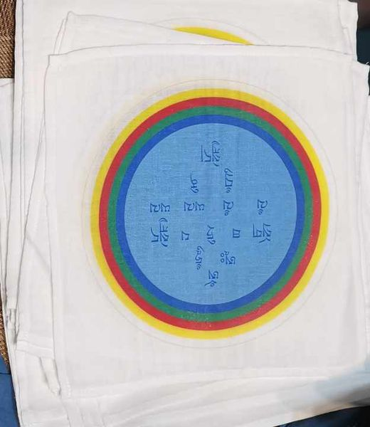

2024/08/27 傑巴吉登加強元素咒語之應用
- 轉載自~作夢者班論壇
- 2011/08/08 南開師開示（聽講筆記）
- 在五大元素的星象學中，一般要克服問題有許多事情，例如當我們生命能量和能力能量有問題，同時也有一個稱「吉巴席登」，「吉巴」指增加，「席」指四，因為我們有生命（Life）、能力（Capacity）、身體（Body）、運勢（Fortune）四種元素，這四元素對每一個人的日常生活很有用也很重要。
- 我不是說這是像發現大圓滿本性這樣的精髓教法，但相對上我們活在二元境則變得很重要也很有用。如何在星象學中使用這些教法呢？例如即便在南卡中也沒有解釋太多相剋的問題，但不強例如很弱，像我的運勢元素就很弱，我就不會有好運。
- 我只有能力元素弱的話，也有機會可以增強它，特別是每一年我們結合年來做就變得很重要。有時當年的生命、能力和身體等這幾項跟我們的元素相剋，那個元素就會變弱，直到隔年我們都會有這個問題。
- 就像去年對我來說是我的太歲年，當我得病我才發現相剋得非常嚴重，我想也許我們真正去查核一下也對此警覺很重要，所以當我稍好些，我開始解釋並準備這本加強四潛能的書，這樣每個人都可以瞭解自己哪個元素弱。
- 每一年都不會維持一樣，每年都不同，因為跟該年的元素相剋而變弱。因此我準備了一本書，當中有解釋以及該怎麼準備。我想若沒有簡單的方式人就無法瞭解，例如我學過藏醫和星象學，我對星象學很有研究，包括元素和在時輪金剛的系統，但很多人不知道這些所以就無法了解，要解釋這些我準備了這本書，我去年病情好轉後我就寫下這本書，完成後也出版了英文和義大利文兩種版本，你們可以去買這本書，然後現在在這裡我就可以來給大家介紹。
- 首先我先給咒語的傳承，因為這有咒語。所以你們知道如何契入真實義——就像大圓滿知識——的話，我們就沒有任何問題，但相對地我們在二元境相，此二元境的情況佛教經論方式的教法是以十二緣起來解釋，那樣的方式也同樣建立於星象學中的十二生肖。
- 你知道當我們學星象學，十二生肖用手指頭數，這樣可以計算，我們從左手中指底端開始，這是鼠，然後牛（食指底）、虎、兔（hare）、龍、蛇、馬、羊（sheep），我們不說 goat 那是中國傳統，然後猴、雞（bird），我們也不說 cock，狗、豬，然後又是鼠，所以一共十二個。這是年的一週期，在十二年一週期中，這稱一個循環，當結合五大元素時，每一個元素重複兩次，就有六十年（一甲子）。但很重要是先了解我們出生年為何，然後出生月和日，同樣以十二週期方式計算，但你不需要知道這太複雜。重要的是我們應該知道你的出生年、是什麼元素，例如西元 2000 年你查表馬上就可以知道。
- 當碰到你生肖年則不好，稱為 loca（犯太歲：今年生肖），有些（西方）人很開心以為這很好，本命年一點都不好，是很沈重（heavy）的一年，你應該要修些什麼克服這個問題。
- 然後其次的沈重年，稱 gidu（刑太歲：今年生肖往前、往後四年），即從你出生年往前往後數四年，同樣是沈重年，這時應該要修法克服。例如今年是兔年，若生肖是鼠的，今天也是 gidu、是負面的。雙重負面：一個是因為 loca 本命年，其次是 gidu；從第四個你繼續數到第七個時（沖太歲：今年生肖往前、往後七年），這也是沈重年，所以有三種可能是沈重年，若你有這種組合，你應該修些什麼克服你的問題。
- 如果你不知道如何克服，至少你最簡單的方式是準備風馬旗，你看火山營這裡我們有很多風馬旗，風馬旗代表五大元素，風馬旗上有許多強大的咒語，風吹動咒語融於空中散佈即可消除負面。準備這些的人，這些就像是因，你就能獲益克服這類問題。
- 如果你更有知識和能力，你應該修這樣的修法。每個人都有生命、身體、能力、運勢四能量，要加強首先你需要它的咒語，那指你必須接受（咒語）聲音的傳承。你領受這聲音後，現在你知道你哪個元素比較弱就可使用該咒語。
- 這種咒語不是你要用唱誦的，你低聲唸，指只有自己聽到。現在我先給咒語傳承。
- 首先是加強生命（life）元素的咒語（口傳）。然後是增進或發展身體（body）元素的咒語，例如某人一般來講有很多病、你不大健康，這表示你身體元素一直都很弱，所以你持誦這個咒語會很有幫助（口傳）。
- 你不用擔心咒語，因為這本書上都有寫，如果你有興趣，你就需要這本書，你就可以持誦和應用。然後是增進能力（capacity）的咒語（口傳）。然後是風馬（lungta）——增進運勢的咒語，（咒語），你知道我們加持風馬旗都用這個咒語，這是增進和加持運勢的咒語。好這是主要四元素（能量）的咒語。
- 現在我們要如何應用和準備這個「吉巴席登」呢？一共有兩種可能性，一件事是我們持咒，另一個是我們準備例如一件衣服，就像 T-shirt 接觸我們身體，這件衣服我們需要特定的顏色，以呼應那個元素。
- 在這件衣服上我們有這些咒語，如何準備這件咒語 T-shirt？你自己弄不是很容易，因為你不知道如何做所有事情，這太複雜了，但當我決定為所有有興趣的人來做這件事時，當我旅行到澳洲、新加波和台灣時，我們已經在計畫了。
- 我們想到：我們需要大量的 T-shirt，因為很多人有興趣，還要有不同的顏色，並考量品質，因為要接觸身體所以要純棉製的。然後我們還要將咒語印在上面，如何寫下這些咒語、又寫在哪裡，寫咒語的地方有個元素的形狀，這最早解釋於星象學教法的書中，但只有解釋而沒有如何做的例子。
- 我每天逐一地思考怎麼去做，然後我慢慢畫在紙上，看我們需要什麼樣的形狀，是圓形還是三角形等等，這些又如何跟五大元素關連，那個顏色空間有多大，這些顏色中如何寫下咒語。
- 我只在一本星象學書發現一個運勢咒語，講到我們如何準備、寫下咒語和顏色，其他元素我們應該如何寫下等等，我也遇到一些問題而停滯了幾星期，我不知道如何繼續下去。
- 直到有晚我有一個清晰的夢，我夢中接收到精確的訊息。夢裡解釋說寫咒語不需要特定方式，所有咒語你都可以用金色來寫，但寫咒語的地方必須是結合五大元素而加以協調的特定色。
- 然後我準備這些形狀、書寫字體等，我叫拉菲爾輸入電腦才有更明確的字，最後我們才成功準備這些。
- 例如這些形狀都跟不同的元素有關，更重要的是如何使正這些形狀，這不是很難，還蠻簡單的，簡單是因為我準備了六十年的排序。
- 例如今年是鐵兔（Iron-hare）年，我們有兩頁六十個不同人的組合，第一欄你去看你出生年為何，在這你可以找到你的出生年。
- 當你看到你的出生年後，你的出生年總是跟你的能力組合在一起。你知道在星象學中我們說今年是鐵兔年，為何是鐵？因為那是該年的能力（能量），你知道能力是如何開始的，能力元素是當嬰兒出生，直到那時才跟這世界、這個顯相接觸，今年過完到下一年就像重新出生，因此能力元素要循環六十年。
- 第二欄代表你生命元素，因為生命元素就像基礎，若我們沒有生命這個基礎就算有身體或運勢很強又能如何？所以最重要的就是生命。
- 所以你看到你生命元素，它不一定和年度元素一致，我放紅色（按：粗體）表示相沖，如果沒有顏色（按：粗體）註記就沒有問題，這年很順遂。
- 例如某人屬龍，假設是木龍（Wood-dragon），那表示他出生年的能力（capacity）是木，生命元素是土，你查生命這一欄馬上就知道，所以對他而言這是負面的，因為土這裡用紅色（粗體）標示，現在你就需要一件 Shirt 來結合修法等等，當你使用這些並持咒會幫助很多。
- 當你看到你身體元素是火，今年火沒有任何問題，你運勢是木跟你能力元素一樣，今年也沒問題。
- 所以你看，每頁有四欄，顯示：能力（capacity）、生命（life）、身體（body）、運勢（fortune），所以這書中列出所有的組合。
- 例如對是木龍的人，生命是土，你可以閱讀生命元素的解釋，一個個都有解釋，你就知道要持什麼咒。
- 你要記下你的出生年，看到出生年後，你生命若是木，就知道需要哪個顏色的 T-shirt，這你需要知道。
- 另件事是這些 T-shirt 已經準備好了，如果你要自己準備也不複雜。但如果你有這本書，你仔細讀過兩三遍，你就成為專家了。
- 這很簡單，我解釋得非常清楚了。所以每年你都可以使用和查核，為你自己、小孩、家人和朋友等看看，這樣每個人都很健康，因為這也不是太難去弄在 T-shirt 或領巾上。
- 有時若你有兩項相沖，在列表中還有人有三個呢，那表示非常沈重，所以我們需要 T-shirts，也需要領巾（眾笑）。
- 因為對每個元素來說顏色都不一樣，若你有三個相剋，你或許需要一次穿上兩件。（眾笑）但如果你是修行者，你使用咒語來修就能有更多效果。
- 如果有些人不是修行者，像是你的朋友等等，如果他們有這類問題，你也可以為他們弄件這樣的 T-shirt，這沒有問題，總是可以利益到他。
- 所以這是「吉巴席登」概要的解釋，現在你知道了，你可以詢問象雄學院，我們有專人處理這些 T-shirt，但最好是先有書才知道該做什麼。
- (2013/11/24-29 重聽錄音翻譯)
返回主頁